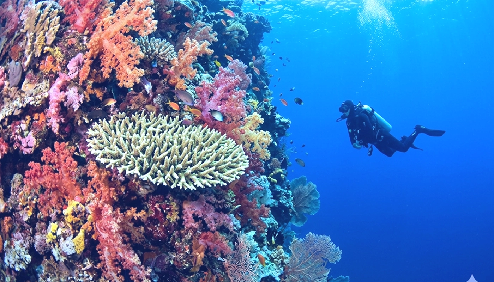

[시즌한정] 팔라우 블루코너 리브어보드 5박 6일
5회 입실횟수 + 런칭다이빙 / 장비(3~4회) 현장 할인
2026.04.01신들의 섬에서 즐기는 다이빙
다채로움의 끝판왕

초보자부터 숙련자까지 모두를 만족시키는 인도네시아 발리(Bali)는 단순한 휴양지를 넘어 다이빙의 메카로 불립니다. 지역별로 확연히 다른 매력을 지닌 발리의 바다를 8가지 기준으로 분석합니다.

Visibility
투명한 시야
Diversity
생물 다양성
Safety
안전 시스템
Accessibility
접근성
Temperature
따뜻한 수온
Accommodation
다양한 숙박
Eco-Nature
보존된 수중생태계
Attractive
독보적인 매력: 시즌별 만남
발리는 시즌마다 전 세계 다이버들을 불러 모으는 강력한 카드를 가지고 있습니다.
만타 가오리를 볼 수 있는 확률이 매우 높으며, 화산재 모래 위의 난파선 다이빙은 발리에서만 느낄 수 있는 독특한 분위기를 자아냅니다.
만타 가오리를 볼 수 있는 확률이 매우 높으며, 화산재 모래 위의 난파선 다이빙은 발리에서만 느낄 수 있는 독특한 분위기를 자아냅니다.

Editor's Tip
발리는 교육과 관광을 동시에 잡고 싶은 중급(Intermediate) 및 초급(Beginner) 레벨에게 최고의 만족도를 선사하는 지역입니다.
ⓒ Copyright by JinGanJang